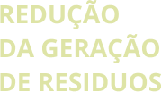
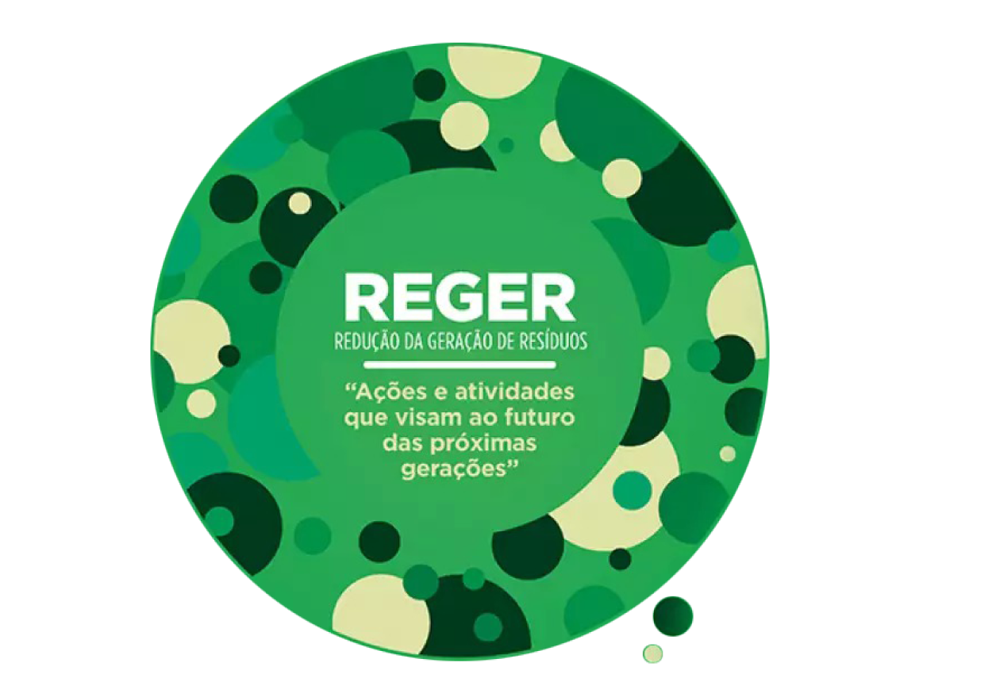
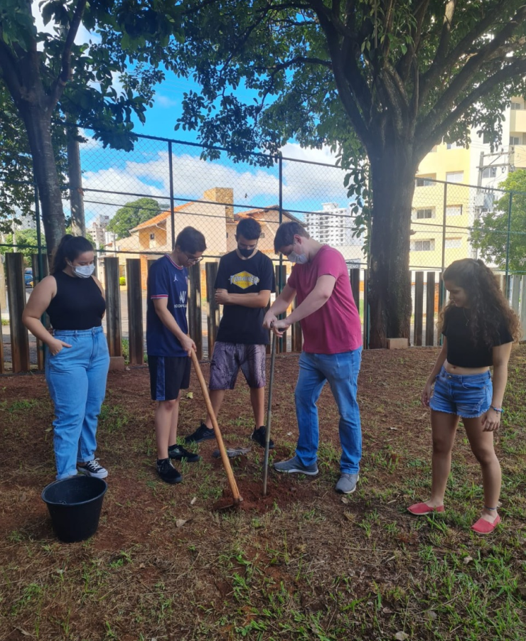
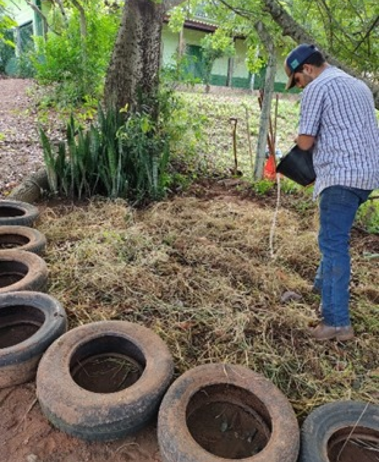
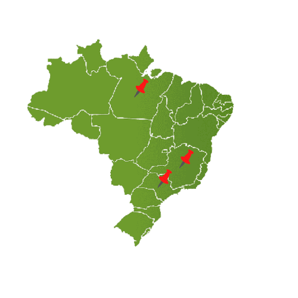
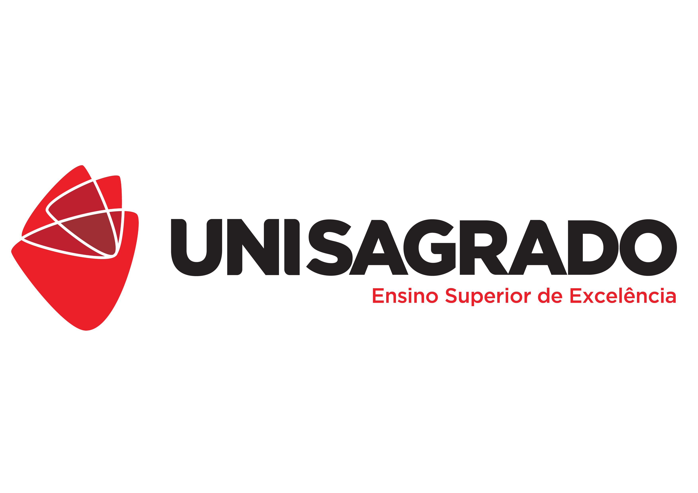
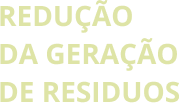
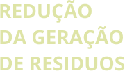

O Projeto
O que fazemos
Onde estamos
Créditos

Bem vindo!

O projeto
O projeto Reger (Redução da Geração de Resíduos) atua na implementação da cultura de sustentabilidade, no Centro Universitário Sagrado Coração (Unisagrado) e na comunidade externa. Para tanto será realizado o diagnóstico dos resíduos gerados no campus, capacitação de alunos, professores e colaboradores para o correto gerenciamento, separação e destinação dos resíduos gerados e serão elaboradas e implementadas propostas para reduzir a geração dos resíduos no campus. Junto à comunidade externa será realizada a capacitação e implementação de ações que contribuam para com a comunidade. Espera-se que com esse projeto os resíduos sejam destinados corretamente e que haja um entendimento da importância de se pensar de forma sustentável. Desta forma este projeto de extensão pretende cumprir com a função de incorporar de forma permanente a discussão e ação sobre o tema sustentabilidade na instituição e na comunidade externa.
O que fazemos?
O projeto Reger atua em ações de fiscalização e orientação do descarte correto de resíduos nos setores administrativos da instituição, bem como realiza capacitações com os funcionários e estudantes para relembrar alguns conceitos de sustentabilidade e descarte dos resíduos. Cabe também ao projeto a coleta os dados quali-quantitativos relacionados aos resíduos gerados, bem como elaborar, propor e implementar ações para a redução da geração dos resíduos. De forma a sistematizar o trabalho e organizar os alunos em cada uma das atividades, o projeto é dividido em áreas de atuação, que estão descritas a seguir. Todas as área ocorrem de forma simultânea.
ÁREA 1: Capacitação e Manutenção
ÁREA 2: Resíduos Orgânicos e Compostagem
ÁREA 3: Redução do consumo de tonners e papel
ÁREA 4: Quali-Quantificação dos resíduos
ÁREA 5: Compras sustentáveis
ÁREA 6: Conscientização


Onde Estamos
Este semestre o Reger além de atuar no gerenciamento dos resíduos do Centro Universitário Sagrado Coração (Unisagrado), inicia o atendimento a comunidade externa com ações junto a Rede Sagrado de Educação, com ações de capacitação e orientação sobre o correto gerenciamento de resíduos em 3 unidades da rede. E atua também no processo de orientação e implantação da compostagem no Centro Irmã Adelaide.
Créditos
Este projeto web foi desenvolvido em decorrência da aula de Linguagem de programação do curso de Ciência da Computação, com o objetivo de mostrar para sociedade sobre o projeto Reger.
Desenvolvedores:
Maria Eduarda Lingo de Almeida
João Gabriel de Mello
Lorenzo Prado Diaz
Lucas Mendes Barbosa
Prof º Vinicius Santos Andrade
Designers:
Pedro Lucas
Rodolfo
Maria Clara Ribeiro Maciel
João Pedro do Lago Cordeiro
Prof ª Sileide Aparecida de Oliveira Paccola

 
